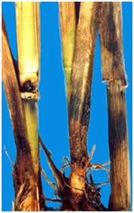
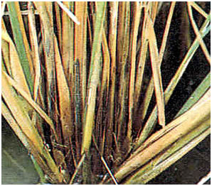

RICE :: FUNGAL DISEASES :: STEM ROT
Stem rot – Sclerotium oryzae(Sexual stage: Magnaporthe salvinii)
Symptoms
Small black lesions are formed on the outer leaf sheath and they enlarge and reach the inner leaf sheath also. The affected tissues rot and abundant small black sclerotia are seen in the rotting tissues. The culm collapses and plants lodge. The sclerotia are carried in stubbles after harvest.
|  |  |
Pathogen
White to greyish hyphae, spherical black and shiny sclerotia, visible to naked eyes as black masses.
Favourable Conditions
- Infestation of leaf hoppers and stem borer.
- High doses of nitrogenous fertilizers.
Disease Cycle
The sclerotia survive in stubbles and straw those are carried through irrigation water. The fungus over winters and survives for long periods as sclerotia in the upper layers (2-3 inches) of the soil profile. The half-life of sclerotia in the field is about 2 years. Viable sclerotia have been found in fields for up to 6 years after a rice crop. The sclerotia are buoyant and float to the surface of floodwater where they contact, germinate, and infect rice tillers near the water line.
Management
Deep ploughing in summer and burning stubbles to eliminate sclerotia.
- Use of balanced application of fertilizer.
- Avoid flow of irrigation water from infected to healthy fields.
- Draining irrigation water and letting soil to dry.